My bachelor's thesis puts a Fibre Bragg Grating (FBG) optical fibre inside a CFRP sandwich panel and asks a direct question: can a fibre buried between the carbon plies measure the dynamic behaviour of the structure well enough to be compared, mode by mode, with a finite element model?
01 Why embedded optical sensing
Composite structures carry aerospace loads at low mass, but their damage modes develop internally and are not always visible from the surface. Instrumenting a structure so that its condition can be read continuously is the aim of structural health monitoring, and optical fibres are well suited to it: light, immune to electromagnetic interference, multiplexable along a single fibre, and thin enough to be laid between plies instead of bonded on top.
A grating inscribed in the fibre reflects a narrow band centred on its Bragg wavelength; strain shifts that wavelength. Reading the shift turns the fibre into a strain sensor that sits where the strain actually is.
02 Specimen and embedded fibre
The specimen is a CFRP panel with an optical fibre carrying two gratings laid between the plies during lay-up, at 93 mm and 319 mm from the root. The two are distinguished by their rest wavelengths, approximately 1546 nm and 1562 nm, so a single fibre and a single channel read both positions.
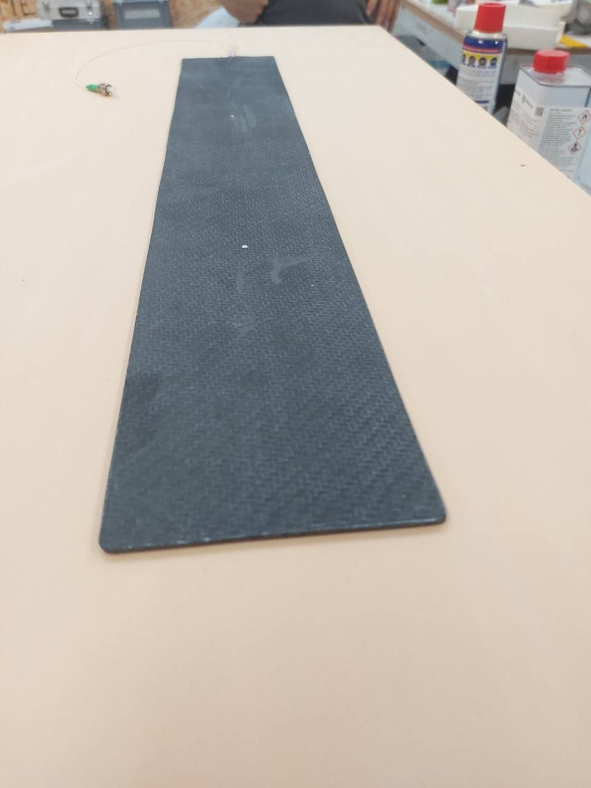
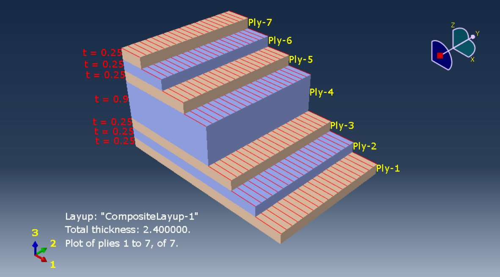
03 Finite element model
Before testing, the panel was modelled in Abaqus/CAE as a cantilever: a perfect clamp at the short edge, S4R shell elements on a regular 5 × 5 mm seeding — 2000 elements, 2121 nodes — and a linear perturbation frequency step solved with Lanczos for the first five modes.
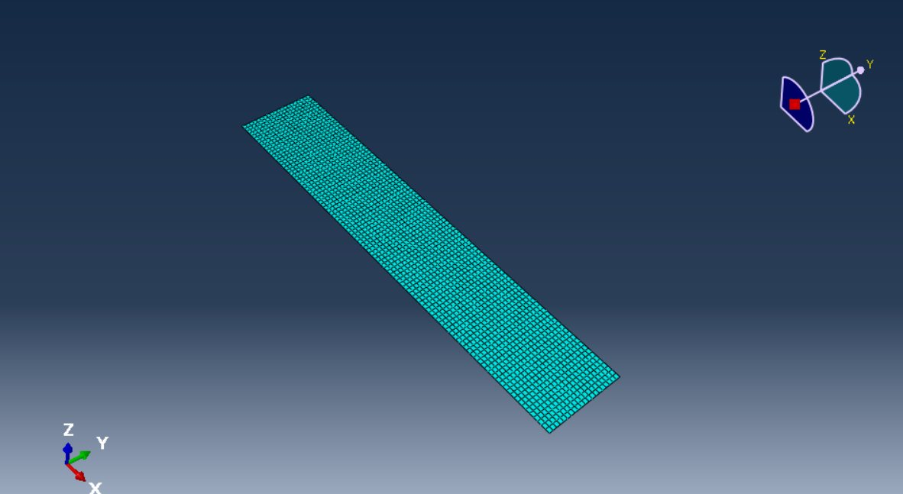
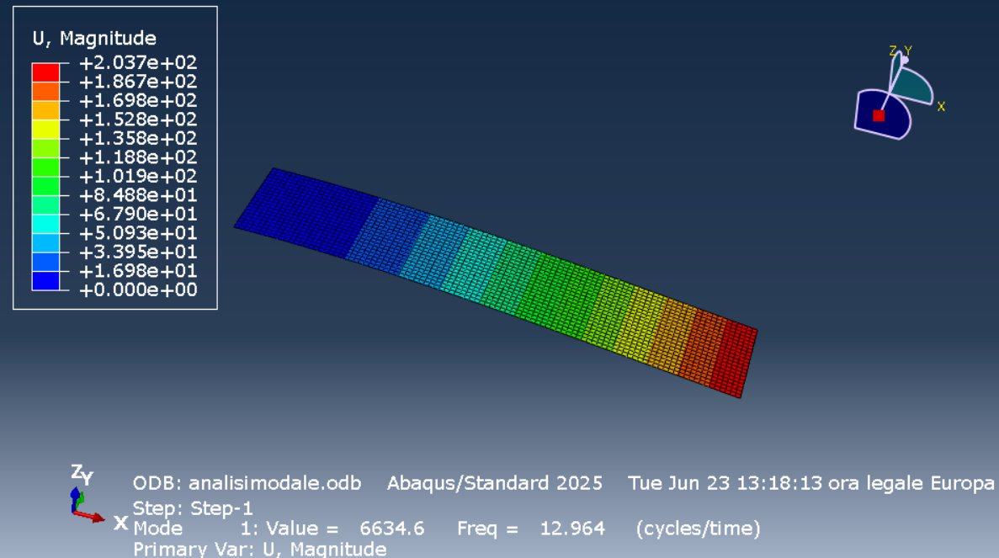
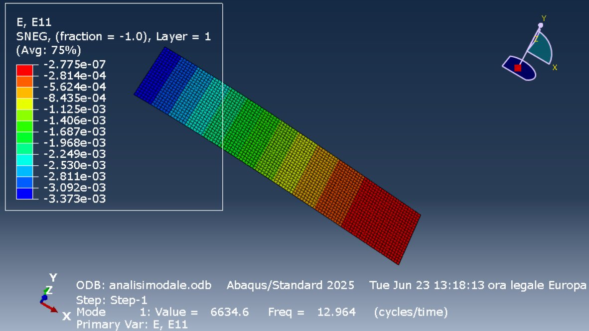
| Mode | Type | Frequency |
|---|---|---|
| 1 | 1st bending | 12.96 Hz |
| 2 | 1st torsional | 54.01 Hz |
| 3 | 2nd bending | 75.79 Hz |
| 4 | 2nd torsional | 168.30 Hz |
| 5 | 3rd bending | 193.27 Hz |
The model does more than predict frequencies. Extracting ε11 along a path on the longitudinal mid-line tells where each mode puts its strain, and therefore which modes the two gratings can be expected to see at all — a prediction the experiment could then confirm or contradict.
04 Test setup
The panel was clamped as a cantilever on the bench and excited with an impact hammer at four points, while a SmartScan optical interrogator recorded the Bragg wavelength of both gratings. An experimental modal test, run with an optical sensor inside the structure instead of accelerometers on its surface.
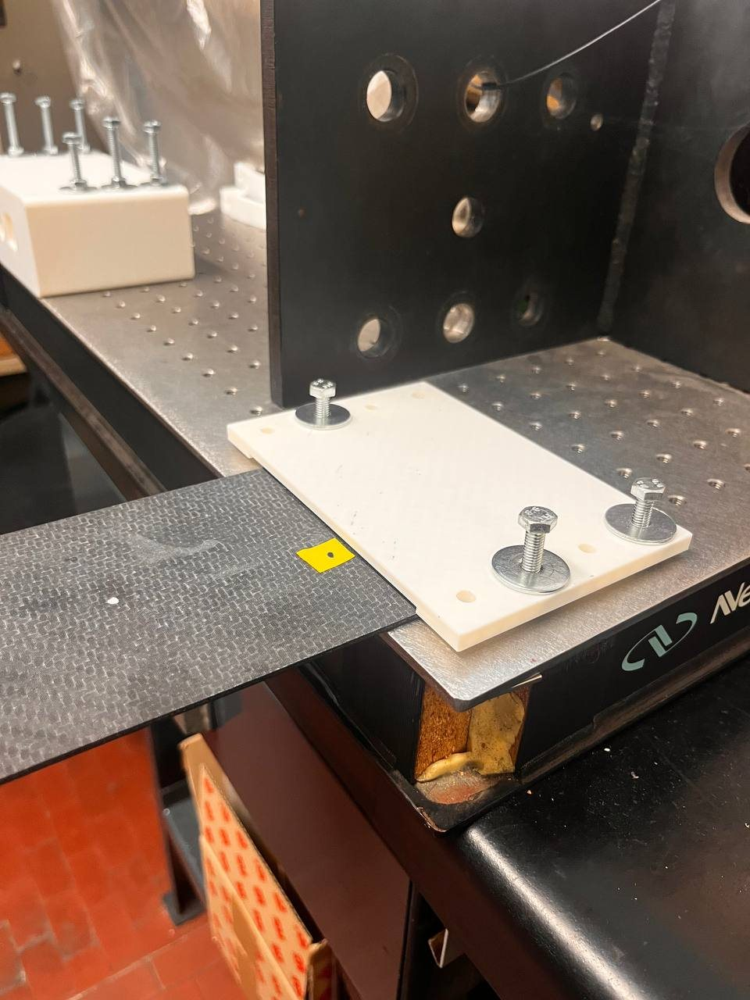
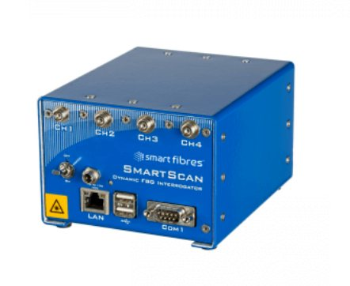
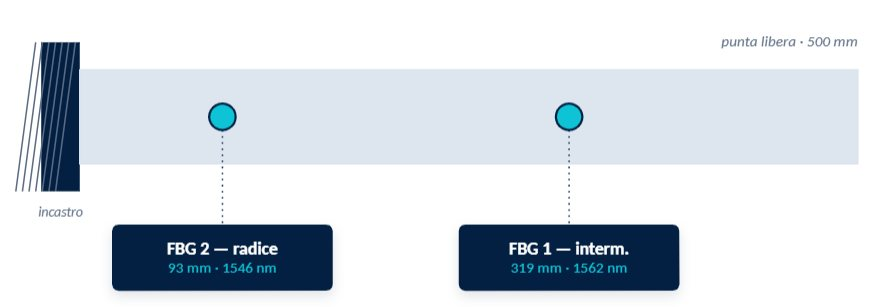
05 From wavelength to modes
Each impact gives an impulsive transient followed by a damped decay. Converting wavelength shift to microstrain and averaging the spectra over repetitions gives clean peaks: the first bending mode dominates, with the higher components falling away, as expected for an impulsive excitation on a thin structure.
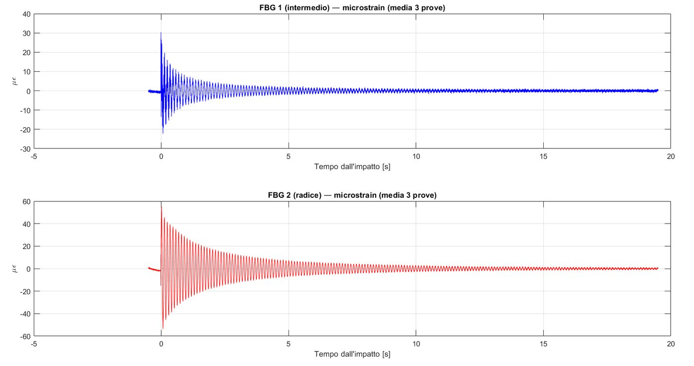
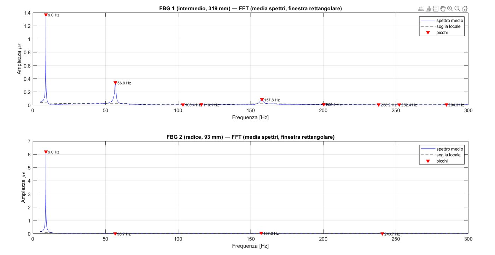
Acquisitions at 625 Hz showed repeatable components at 113 and 164 Hz that are not modes at all: the real components at 512 and 461 Hz fold back across the reduced Nyquist frequency of 312.5 Hz, landing exactly there. Modal identification was therefore carried out only on the 2.5 kHz acquisitions.
06 Correlation with the model
Three bending modes were identified experimentally. The frequencies come out consistently below the model.
| Mode | FEM | Measured (FBG) |
|---|---|---|
| 1st bending | 12.96 Hz | 9.05 Hz |
| 2nd bending | 75.79 Hz | 57.1 Hz |
| 3rd bending | 193.27 Hz | 157.8 Hz |
The gap is not measurement error: it is the clamp. The model assumes a perfect constraint, the bench one has residual compliance, and a compliant root lowers bending frequencies most strongly for the lowest mode. That is exactly the trend observed — the difference is largest on the first mode and narrows steadily as the mode order rises, which is the signature of a boundary condition, not of a sensor.
The torsional modes were never seen, and that is the expected answer rather than a failure: a grating aligned with the longitudinal axis reads ε11, and a torsional mode produces almost no axial strain along that centre line.
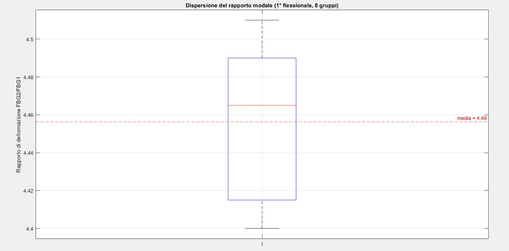
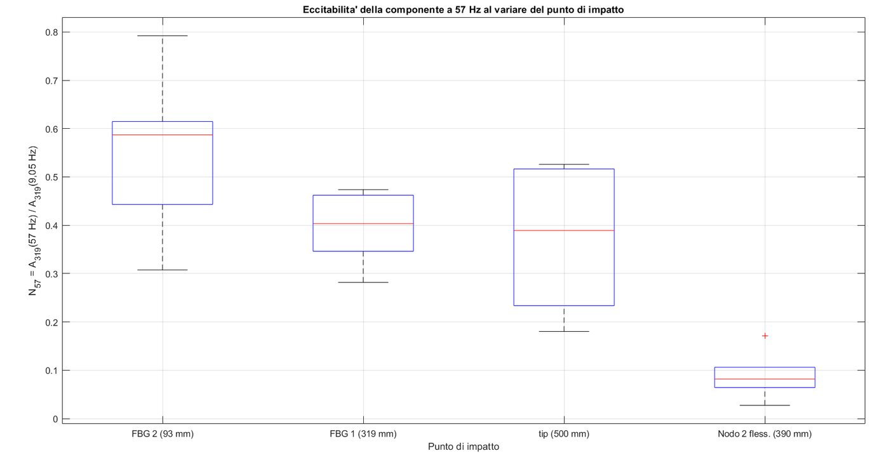
Frequency alone does not identify a mode, so the strain mode shape was checked too. Sampling the model curve at the two grating positions gives an expected amplitude ratio, independent of how hard the hammer was swung. For the first bending mode the measured ratio is 4.46 against 3.7 predicted, stable to within 1% across eight test configurations. For the third it is 1.65 against 2.0 predicted, with a dispersion of about 4%. The second bending mode cannot be compared this way — one grating sits almost exactly on its strain node, which is itself the confirmation: the 57 Hz component appears only on the other grating.
A last check closed the identification. Striking the displacement node of the second bending mode suppressed its spectral component roughly fivefold, with the excitability indicator dropping from a median of 0.59 to 0.08 — the behaviour a real mode must have, and one an artefact would not.
07 What it shows
An optical fibre embedded between carbon plies returns a repeatable modal characterisation: frequencies, relative amplitudes and the presence or absence of each mode all agree with the model once the real boundary condition is taken into account. The discrepancies are informative rather than noise — they point to the clamp and to the sensing direction, not to the measurement. The natural continuations are a stiffer, better-characterised constraint, gratings placed off the centre line so torsion becomes visible, and more of them along the fibre for spatial coverage.
Figures are taken from the thesis document; full specifications, protocol and numerical results are reported there.